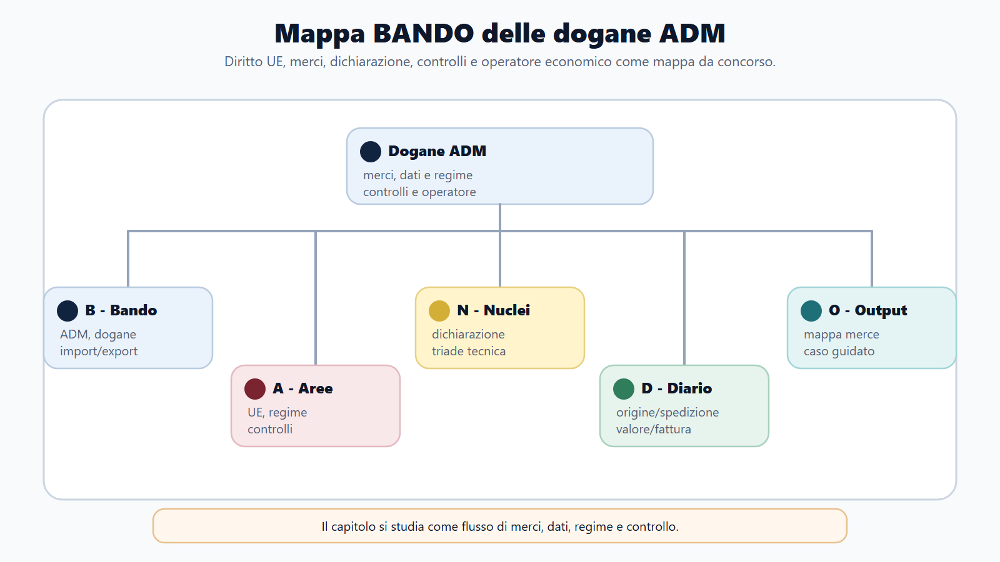
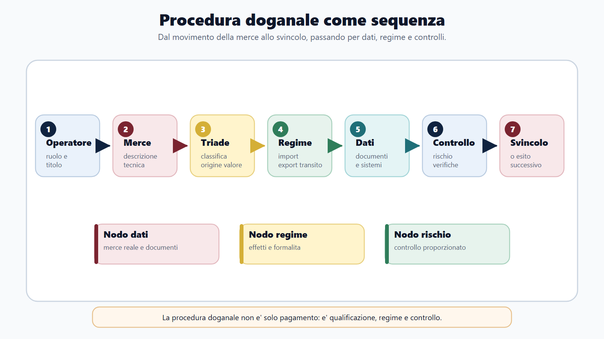
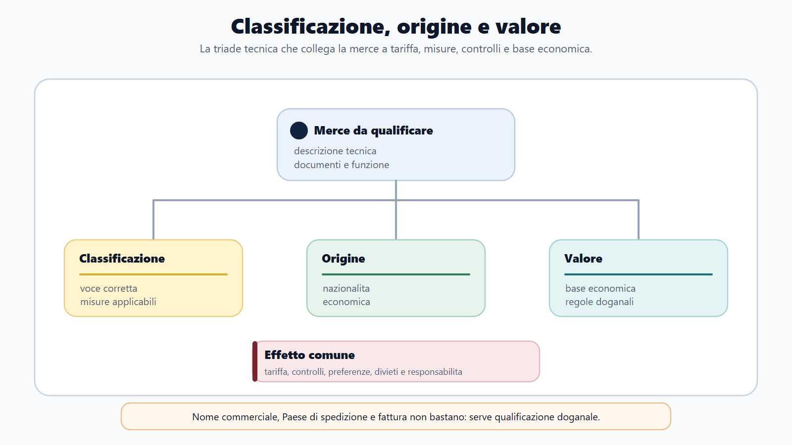
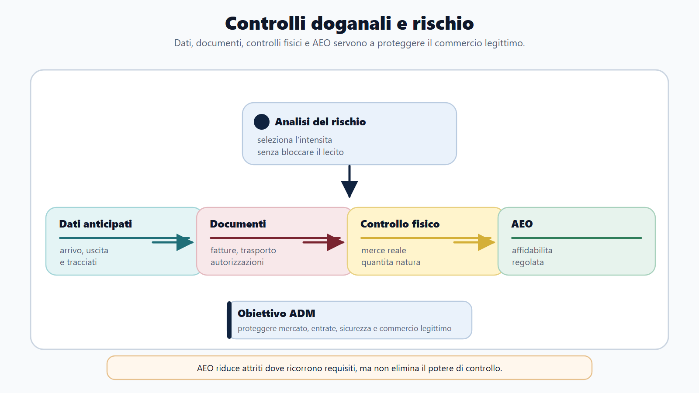

VOL-03 · Capitolo 25
M-FC02
Dogane e procedure doganali ADM
Una merce che attraversa il confine non viene valutata soltanto per ciò che sembra. Occorre stabilire che cosa sia secondo la tariffa, quale origine possieda, quale valore debba essere dichiarato e quale regime l’operatore intenda applicare.
01 · Il problema in prova
Il lessico è già la prova
Introduzione, presentazione, dichiarazione, accettazione e svincolo descrivono momenti diversi. Origine, provenienza e spedizione non coincidono. Prezzo di fattura e valore in dogana possono divergere. ADM non è AE: l’oggetto immediato sono merci, operatori, regimi e controlli.
Che cos’è la procedura doganale
La catena che porta la merce dall’arrivo allo svincolo, e oltre: dichiarazione, analisi del rischio, diritti, eventuale controllo successivo. Fiscalità e sicurezza convivano con la regolarità degli scambi.
A che serve in prova
A non calcolare subito il dazio dal prezzo di fattura. Prima voce tariffaria, origine, regime, valore in dogana e misure aggiuntive. Un calcolo corretto su dati giuridicamente sbagliati resta un accertamento errato.
Prima l’Unione, poi il complemento nazionale.
Il nucleo è il Regolamento (UE) n. 952/2013, Codice doganale dell’Unione. Lo completano i regolamenti 2015/2446 e 2015/2447. In Italia il D.Lgs. 141/2024 reca le disposizioni nazionali complementari. Il D.P.R. 43/1973 conserva rilievo storico, ma non è più l’unica architrave.
02 · BANDO
Cinque decisioni su questo capitolo
| Che cosa fai | Se la salti | |
|---|---|---|
| B — Bando | Cerca CDU, importazione, esportazione, transito, dichiarazione, controlli, origine, valore, tariffa. | Studi un elenco di dazi senza procedura. |
| A — Aree | Collega diritto UE, tributario, procedimento, commercio, controlli e sanzioni. | Riduci la dogana al solo incasso. |
| N — Nuclei | Territorio, status, dichiarante, regime, debito, origine, valore, classificazione, svincolo. | Confondi origine e provenienza, accettazione e svincolo. |
| D — Diario | Registra le coppie: origine/provenienza, introduzione/importazione, AEO/immunità. | Ripeti le trappole nel quiz. |
| O — Output | Flusso di una dichiarazione e caso con documenti, rischio e possibile controllo. | Calcolo numerico senza qualificazione. |
03 · Mappa
Fonti, merci, triade, regimi, controlli
La mappa tiene insieme il CDU, lo status delle merci, la dichiarazione, classificazione-origine-valore, i regimi e il lavoro ADM.

Il bando attiva CDU, merce, dichiarazione e controlli; poi si sceglie il regime e si valuta il rischio.
04 · Merci e soggetti
Territorio, status, dichiarante, AEO
Il territorio doganale dell’Unione non coincide in modo perfetto con il territorio geografico o fiscale degli Stati membri. Le merci unionali circolano secondo le regole del mercato interno; le non unionali restano sotto vigilanza finché non acquistano lo status unionale, vengono vincolate a un altro regime o escono.
Origine e provenienza
La provenienza indica il luogo dal quale la merce è spedita. L’origine è una qualificazione giuridica fondata su produzione o trasformazione. Un bene spedito dalla Svizzera può avere origine cinese. Cambiare il Paese di spedizione non cambia automaticamente l’origine.
Rappresentanza e AEO
Rappresentanza diretta: in nome e per conto. Indiretta: in nome proprio per conto altrui. L’EORI identifica l’operatore. L’AEO è riconosciuto affidabile e può accedere a semplificazioni: non elimina i controlli e non è un’immunità doganale.
05 · Flusso
Dall’arrivo allo svincolo
La custodia temporanea non è un regime scelto per conservare merci a tempo indefinito. È la condizione delle merci non unionali presentate in dogana in attesa di regime o riesportazione, entro il termine del CDU. Accettare la dichiarazione non significa aver già concluso ogni controllo.

Presentazione, dichiarazione, accettazione, rischio, diritti, svincolo, eventuale controllo successivo.
06 · Dichiarazione
Il dichiarante risponde dei dati
La dichiarazione è normalmente elettronica e manifesta la volontà di vincolare le merci al regime. Il controllo automatizzato non trasferisce la responsabilità all’amministrazione. Un dato accettato dal sistema può essere verificato successivamente. Rettifica e invalidamento non sono intercambiabili e non servono a sottrarsi a un controllo già annunciato.
| Passaggio | Domanda operativa |
|---|---|
| Soggetto | Chi è l’operatore e con quale ruolo? |
| Merce | Che cosa viene importato, esportato o movimentato? |
| Triade | Classificazione, origine, valore: tre domande distinte. |
| Regime e documenti | Quale destinazione giuridica e quali prove, licenze, certificati? |
| Rischio | Quali elementi richiedono approfondimento? |
07 · Triade tecnica
Classificazione, origine, valore
La classificazione non dipende dal nome commerciale. Si fonda su caratteristiche oggettive, composizione, funzione, grado di lavorazione e regole generali di interpretazione. L’informazione tariffaria vincolante, quando rilasciata, vincola autorità e titolare nei limiti previsti: non sana dichiarazioni inesatte su prodotti diversi.
Origine non preferenziale: misure commerciali, antidumping, statistiche. Preferenziale: dazio ridotto o nullo se accordo, regola di prodotto e prova valida. Valore di transazione: prezzo pagato o da pagare, rettificato. Se inutilizzabile, metodi secondari nell’ordine legale, non il più conveniente.
Tre domande: che cosa è, da dove è originaria, quanto vale ai fini doganali.

08 · Regimi
Destinazione giuridica della merce
Il regime determina diritti, obblighi, controlli e appuramento. Il nome commerciale usato dall’utente non decide. Il vantaggio finanziario non è definitivo finché la procedura non è regolarmente conclusa.
| Regime | Funzione | Errore da evitare |
|---|---|---|
| Immissione in libera pratica | Attribuisce alle merci non unionali lo status unionale. | Confonderla con la semplice immissione nel mercato. |
| Esportazione | Regola l’uscita delle merci unionali. | Pensare che basti la fattura estera. |
| Transito | Circolazione sotto controllo con sospensione dei diritti. | Scambiarlo per una vendita o un’importazione. |
| Deposito | Tenere merci sotto vigilanza senza assolvere subito i diritti. | Trattarlo come magazzino libero da regole. |
| Perfezionamento / uso particolare | Lavorazioni o utilizzo specifico alle condizioni del CDU. | Ridurli a un conto lavorazione o a un regime senza vincoli. |
09 · Debito
Regime, debito, garanzia
Il debito doganale è l’obbligo di pagare i dazi applicabili a una merce. Può sorgere per regolare vincolo a un regime oppure per inosservanza. Non coincide con il valore della merce né con la semplice dichiarazione. La garanzia tutela l’adempimento: non sostituisce il debito.
| Concetto | Funzione | Errore |
|---|---|---|
| Debito | Obbligo di pagamento dei diritti dovuti. | Ridurlo a un importo da fattura. |
| Garanzia | Copre il rischio di mancato pagamento o di obbligazioni potenziali. | Considerarla una sanzione. |
| Sgravio | Evita o elimina l’esazione nei casi previsti. | Confonderlo con il rimborso. |
| Rimborso | Restituisce quanto già pagato. | Usarlo per ogni annullamento. |
Un regime speciale non impedisce sempre il sorgere del debito. Può sospendere o modulare i diritti, ma l’inosservanza degli obblighi del regime può far nascere l’obbligazione.
10 · Controlli
Il rischio orienta, lo svincolo non chiude
La selezione si fonda sull’analisi del rischio, integrata da controlli casuali e da obblighi specifici. Il controllo documentale confronta dichiarazione, fattura, trasporto, origine e autorizzazioni. Il controllo fisico verifica natura, quantità, marchi e corrispondenza. Lo svincolo non impedisce il controllo successivo.

AEO indica affidabilità regolata, non esclusione assoluta dai controlli. Il contraddittorio opera prima delle decisioni sfavorevoli, salve le eccezioni del CDU.
11 · Caso guidato
Componenti elettronici importati
Una società italiana importa da un fornitore turco componenti prodotti in Cina. La fattura li descrive come «accessori elettronici», applica un prezzo molto basso e allega una dichiarazione di origine preferenziale turca. Chiede l’immissione in libera pratica.
| Passaggio | Ragionamento |
|---|---|
| Classificazione | La descrizione commerciale non basta. Servono schede tecniche, composizione e funzione. |
| Origine | Spedizione dalla Turchia e origine non coincidono. La produzione cinese può escludere la preferenza se mancano le regole dell’accordo e la prova valida. |
| Valore | Il prezzo basso non si sostituisce automaticamente. Contratto, pagamenti, rapporti tra le parti, costi da includere; poi eventuali metodi secondari nell’ordine. |
| Controllo | Tre elementi distinti. Campionamento per la classificazione; istruttoria documentale per origine e valore. Solo dopo dazio, misure e svincolo. |
12 · Verifica
Due domande da saper spiegare
Elementi fondamentali dell’accertamento doganale
Partire da classificazione, origine e valore; spiegare l’effetto di ciascuno su dazi e misure; collegare dichiarazione e documenti; descrivere analisi del rischio, controllo e svincolo; chiudere con rettifica o controllo successivo.
Spedita da un Paese con accordo: dazio ridotto sempre?
No. La provenienza fisica non prova l’origine preferenziale. Occorre che la merce rispetti la regola di origine dell’accordo e che sia presentata una prova valida, oltre alle altre condizioni previste.
13 · Mini-esercizio
Che cosa verificare per primo
| Situazione | Primo elemento |
|---|---|
| In fattura: «ricambio universale» | Classificazione: caratteristiche oggettive e funzione. |
| Arriva dal Vietnam ma è fabbricata in Cina | Origine: separare provenienza e origine. |
| Il compratore ha fornito gratuitamente uno stampo | Valore: l’apporto può richiedere un’aggiunta al prezzo. |
| Merci non unionali verso un ufficio interno senza dazi immediati | Transito: circolazione sotto controllo con sospensione. |
| Lavorare materie extra-UE e riesportare | Perfezionamento: autorizzazione, operazioni ammesse, appuramento. |
14 · Anti-confusione
Sei formule da tenere ferme
| Confusione | Formula corretta |
|---|---|
| Dogana = pagamento di un dazio | La dogana applica regole su merci, regimi, controlli, sicurezza e misure commerciali. |
| Origine = Paese di spedizione | L’origine si determina secondo regole doganali. |
| Valore = prezzo di fattura | La fattura è il punto di partenza; il valore segue i criteri del CDU. |
| Classificazione = descrizione commerciale | Dipende dalle caratteristiche oggettive e dalla nomenclatura. |
| AEO = assenza di controlli | Affidabilità regolata, non immunità. |
| Svincolo = fine di ogni verifica | Consente la disponibilità secondo il regime, ma non elimina ogni potere di controllo. |
15 · Da tenere ferme
Cinque regole, con il perché
1. Il CDU è la fonte primaria comune; il D.Lgs. 141/2024 contiene il complemento nazionale.
2. Dichiarazione, accettazione, controllo e svincolo sono fasi diverse.
3. Classificazione, origine e valore determinano aspetti distinti del trattamento doganale.
4. Immissione in libera pratica, esportazione e regimi speciali hanno funzioni diverse.
5. Il controllo doganale continua anche dopo lo svincolo mediante verifiche successive.
16 · Lavoro ADM
Fermo, comprensibile, europeo
Il funzionario o assistente può operare su dichiarazioni, controlli documentali, verifiche fisiche, campionamenti, autorizzazioni, contenzioso, analisi dei rischi e servizi agli operatori, secondo profilo e ufficio. Non suggerisce come eludere un obbligo e non trasforma un dubbio classificatorio in un’accusa.
Condotta
Chiede documenti pertinenti, verbalizza, protegge informazioni commerciali e motiva le conclusioni. Il lavoro ha una dimensione europea quotidiana: dati, autorizzazioni e rischi possono interessare più Stati membri.
Caso magazzino
Un’impresa vuole tenere merci non unionali in attesa di lavorazione. Prima si chiede se descrive un deposito, un transito, un’immissione in libera pratica o un perfezionamento. Decide la finalità giuridica, non il linguaggio commerciale.
Prossimo capitolo
Accise, giochi e monopoli
La merce doganale è qualificata. Il capitolo successivo segue un’altra filiera ADM: quantità e impiego dei prodotti, deposito fiscale, e-AD, concessione di gioco. Sospensione non è esenzione.